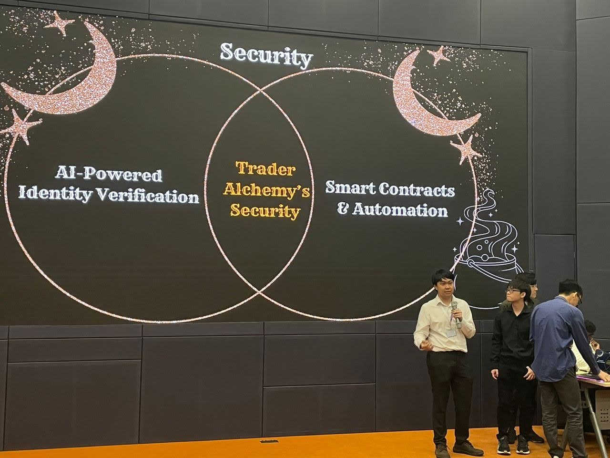
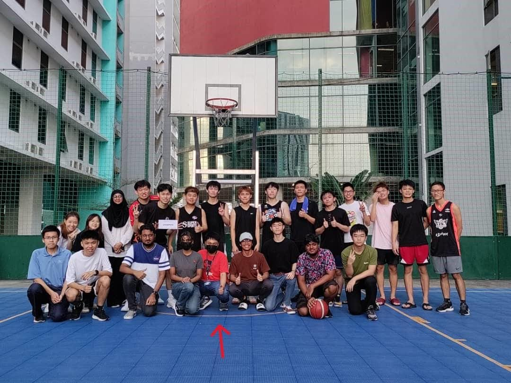
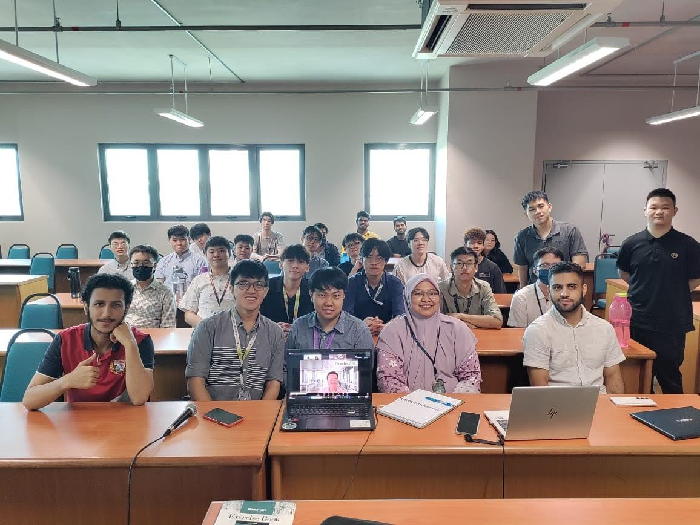

AI developer with a player's mindset.
I find the guides, break it down, and don't stop until it clicks.

Fresh CS (AI) graduate from APU with a player's mindset — when I hit something new, I find the guides, break it down, and grind until it clicks.
I'm comfortable working across languages — Python, Java, HTML, C++, and more — with most of my projects built in Python. From computer vision to machine learning models to a fully offline RAG pipeline, I build things to understand them, not just to add them to a list.
Right now I'm actively going deeper into the AI stack — vector databases, deep learning, NLP, embeddings, and local LLM deployment. I'm early in my career but I learn fast, I ship things, and I bring the kind of curiosity that doesn't switch off.
Tools and languages I'm confident working with day to day.
Used in real projects — still building depth and confidence.
Platforms I've worked with — not claiming mastery, just hands-on use.
Led a team of 14 members to successfully organise and host a self-funded basketball event from the ground up — handling logistics, budgeting, coordination, and on-day execution.

Led a team of 6 members to reach out, coordinate, and invite speakers from reputable companies to deliver an engaging industry sharing session for students.

Specialising in Artificial Intelligence — studying machine learning, computer vision, data structures, software engineering, and full-stack development.
Proposed and developed entirely solo after my mentor identified a real gap: non-CS students consistently struggled to grasp neural network concepts through traditional learning. With no prior experience in game development or digital art, I self-taught the Godot engine and GDScript from scratch to build NEURO — an RPG-style horde-survival game that teaches neural network fundamentals through interactive gameplay and quiz mechanics. Every asset, mechanic, and line of code was the result of self-learning and independent problem-solving.
Managed and resolved IT service tickets by diagnosing technical issues and providing system troubleshooting for internal users. Utilised enterprise tools including JIRA, SAP, Confluence, Freshservice, and Kaseya to track incidents and maintain service documentation. Collaborated with the IT team to ensure timely resolution of infrastructure and user support requests.
Participated as a team member alongside the APU AI Club President to develop a prototype concept focused on Web3 Solana trading. Explored ideas around cryptocurrency and decentralised trading platforms, and presented the concept to judges.
Participated in a hands-on workshop introducing the Smoorph robotics platform and its real-world engineering applications.
An RPG-style educational game built in Godot that teaches the fundamentals of neural networks. Integrates quiz-based learning with horde-survival gameplay. Leveraged Google Gemini to prototype game logic, debug GDScript, and validate educational accuracy. Conducted evaluation sessions with students to assess learning effectiveness.
ML model that predicts song popularity on Spotify using audio features and data analysis techniques.
Image processing system in MATLAB that detects and reads vehicle number plates using computer vision and OCR.
A fully offline Retrieval-Augmented Generation pipeline. Embeds documents using SentenceTransformers, stores vectors in ChromaDB, retrieves semantically relevant chunks, and generates grounded answers via Mistral 7B running locally through Ollama — no API keys or cloud costs.
This portfolio — designed and built from scratch with vanilla HTML, CSS, and JavaScript. Features a custom planet cursor, drag-to-scroll with momentum, animated skill bars, tabbed sections, photo carousel, and a pastel gradient theme. Hosted on GitHub Pages.
Self-directed learning projects — things I'm building, breaking, and figuring out on my own.
Binary classification on real, messy data. Cleaned missing values, engineered features, and trained a tuned Random Forest to 81% accuracy.
Predicted California house prices using Linear Regression and Random Forest. Reduced MAE from $45k → $31k through feature scaling and model comparison.
Built first neural network from scratch using TensorFlow/Keras. Achieved 100% test accuracy on 3-class flower classification.
Convolutional neural network that recognises handwritten digits with 99.16% accuracy — only 84 mistakes out of 10,000 test samples.
Bidirectional LSTM that classifies movie reviews as positive/negative with 85% accuracy. Discovered model limitations with negation — the reason Transformers replaced LSTMs.
ML pipeline to predict which telecom customers are likely to cancel. Handled real-world class imbalance using SMOTE, trained an XGBoost classifier, and used SHAP values to explain individual predictions — not just what the model predicts, but why.
I'm actively seeking roles in AI, software development, or IT support.
Drop me a message — I reply fast.